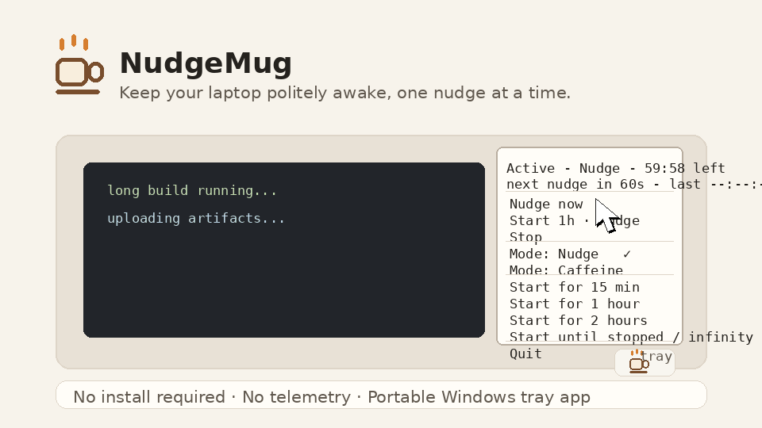

Keep your laptop politely awake.
NudgeMug is a tiny Windows tray app for demos, uploads, long builds, reading, remote sessions, and those suspiciously human pauses where you are just thinking.

Nudge mode
A small visible mouse square plus a harmless F15 key signal every minute, using the modern Windows SendInput path.
Caffeine mode
Keeps the system and display awake without sending user input. Useful for downloads, builds, and presentations.
Finite sessions
Start for 15 minutes, 1 hour, 2 hours, or until stopped. Visible status tells you what it is doing.
Small by design
No telemetry
NudgeMug does not phone home, collect analytics, or send data anywhere.
Portable
Download the tray exe, run it, quit it. No service, scheduler, account, or background updater.
Open source
The source, release assets, and checksums live on GitHub.
Verify the SHA256 checksum from the GitHub release. Code signing can come after traction; transparency comes now.